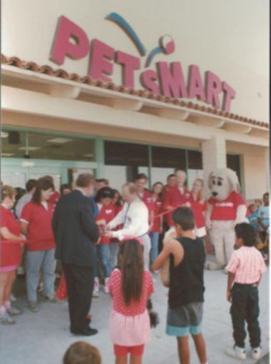
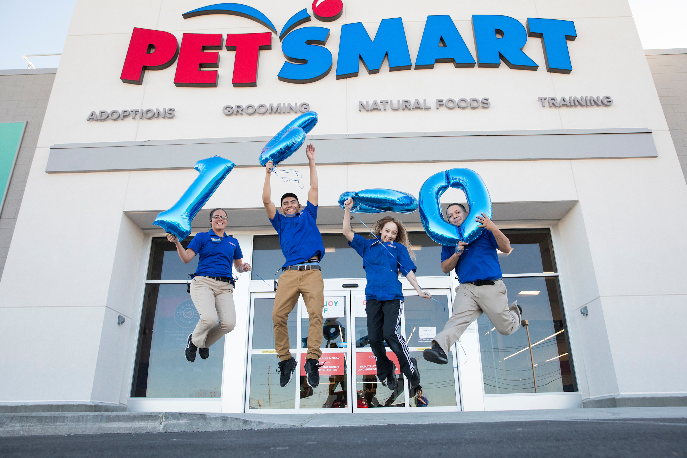

About Us
Brief History
Founded in 1986 by Jim and Janice Dougherty, the company opened its first two stores in 1987 in Phoenix, Arizona under the name PetFood Warehouse, as warehouse-type stores that sold pet food in bulk at discount prices. Under new leadership the company changed its name to Pet Smart in 1989 and, along with expanding around the country, began a long-term shift away from visually unappealing discount warehouse stores to attractive stores that sold pet food and supplies and offered services such as grooming, adoption events, and vet visits. The company went public via an IPO in 1993, and thereafter increased its nationwide expansion and the types of goods and services it offered.

PetSmart As Of Today
It is the leading North American pet company, and its direct competitor is Petco.[4][5] Its indirect competitors are Amazon, Walmart, and Target.[6] As of 2020, PetSmart has more than 1,650 stores in the United States, Canada, and Puerto Rico.[1] Its stores sell pet food, pet supplies, pet accessories, and small pets. Stores also provide services including grooming, dog daycare, dog and cat boarding, veterinary care via in-store third-party clinics, and dog training. They also offer dog and cat adoption via in-store adoption centers facilitated by the non-profit PetSmart Charities.